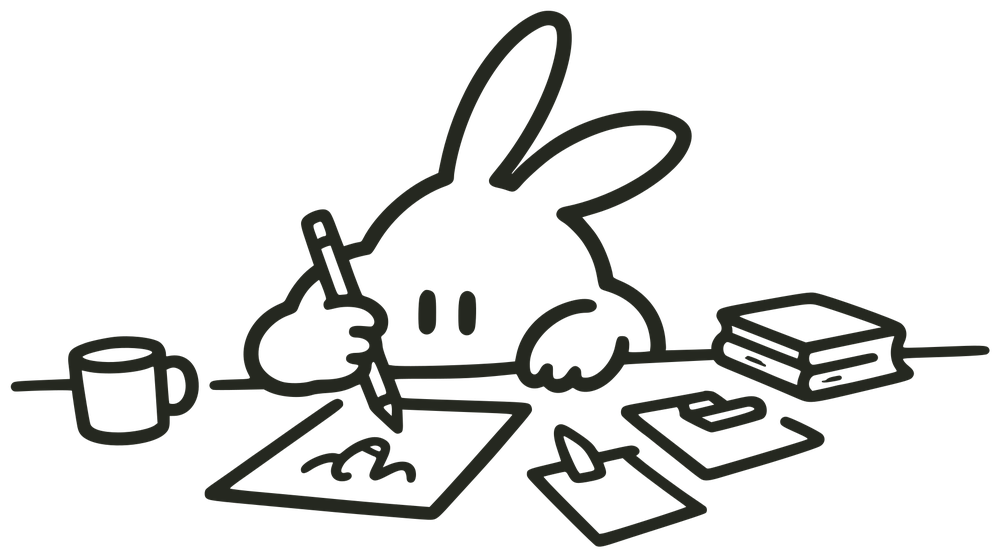

토끼발
RABBIT'S FOOT
영화감상시그
영화 취향표
비우기
이미지로 저장
ChatGPT로 내 취향 분석하기
내가 고른 영화가 담긴 분석 프롬프트예요. 복사해서 ChatGPT에 붙여넣어 보세요!
프롬프트에 들어갈 내 영화
프롬프트 복사하기
영화감상시그 토끼발
가입신청 바로가기
상영회
토끼발 상영회에서 만나요!
만든 사람
영화감상시그 토끼발 · 시그장 박설 제작
RABBIT'S FOOT MOVIE SIG
스크롤 해 보세요!
영화 고르기
제목만 넣기
내 사진으로
이 칸 비우기
닫기